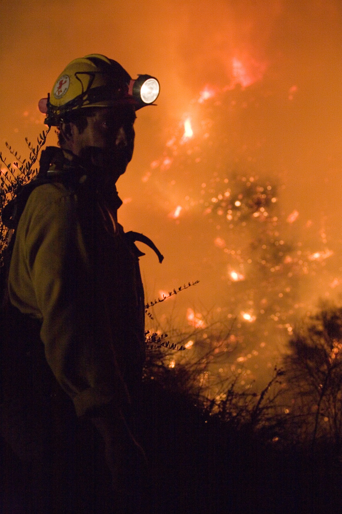

Chapter 12
The Fire’s Westward Advance
The warehouses of Thames Street held sixty pounds’ weight of tallow in a single chamber, and train oil in casks enough to supply a fleet. Two streets north, in Guildhall Yard, the City Corporation kept its archives in a building that dated to the reign of Henry V. The rolls there recorded property boundaries established in the thirteenth century, debts contracted and settled across generations, the chartered privileges that made London’s merchants free of other towns’ tolls. Material wealth and institutional memory now stood in the same wind’s path. The fire would not distinguish between them.
Samuel Pepys saw the pattern forming on Monday afternoon. He had crossed the river by boat and walked through Southwark to view the flames from the south bank, finding the sight so terrible that he recorded it twice in his diary—first as witness, then as judge. The fire, he wrote, was burning all the way from the bridge by the Tower in a bow almost to Woolwich. He noted specifically what burned: the houses, churches, and hospitals. The completeness mattered to him. This was not a fire that left walls standing or stones intact. It consumed categories.
He returned by water toward evening, and the river itself had become a moving archive of loss. He saw the whole City almost burned, all Cheapside, all Paul’s Churchyard, all Fleet Street to the Old Change. These were the channels of English commerce and law. Cheapside was where goldsmiths and mercers had their shops, where the standard weights and measures were kept. Paul’s Churchyard was the country’s principal book market, the place where the Stationers’ Company regulated the trade in print. Fleet Street was the road to Westminster, lined with inns where lawyers and clients negotiated. The Old Change was a financial crossroads. Pepys named them as a man might name fingers he expected to lose.
By Tuesday morning the fire had established its method. It advanced not as a single front but as a series of separate fires, each finding its own path through the dense construction. The wind carried embers across streets that should have served as firebreaks. The heat cracked stones and melted lead, so that roofs collapsed and spilled their burning contents into cellars below. The very materials of prosperity—pitch, tar, resin, oil—became accelerants that the flames discovered room by room.
John Evelyn, writing from his house in Deptford, recorded Tuesday as that dismal day. He had crossed the river to witness what he could not prevent, and his account moves from observation to lament without transition, as if the facts themselves demanded grief. He saw the whole City in a dreadful fire near Cheapside. The word dreadful carried its older weight: not merely bad, but full of dread, inspiring fear that went beyond immediate danger to something like awe at destruction’s scale. He watched the streets full of nothing but fire and flames. The absoluteness of nothing but suggests a world stripped of familiar distinction. Fire had become the only category.
Evelyn’s route took him to the Guildhall. He found it burning, that most goodly fabric now threatened with ruin. The phrase was precise: the hall had been rebuilt in 1411, after the first Guildhall burned, and its hammerbeam roof was among the finest examples of English carpentry. But Evelyn’s attention moved quickly from architecture to consequence. The records were burning. The books of the Chamberlain, he noted, and other public books of the City. These were not decorative archives. The Chamberlain’s accounts tracked the City’s property, its loans, its investments in the orphanage at Christ’s Hospital and the grammar school at St Paul’s. The other public books included the Letter Books that recorded mayoral decrees back to the reign of Edward I, the Repertories of the Court of Aldermen, the Freedom Registers that certified who possessed the rights of London citizenship.
The destruction was selective and complete. The flames took the upper stories first, where the most recent records were stored, then worked downward through centuries of parchment and paper. Some documents survived in iron chests that resisted heat long enough for rescue. Most did not. The loss was not merely of information but of mechanism: the City Corporation governed through precedent, and precedent was written. A debt disputed in 1667 could not be resolved by reference to a contract recorded in 1647 if the record had burned. A property boundary claimed by inheritance could not be verified against the orphan’s court rolls if those rolls were ash. The Corporation would continue to meet, to issue orders, to employ men. But it would do so with diminished authority, its memory truncated, its continuity broken.
The physical damage to the Guildhall confirmed this administrative wound. Evelyn saw the ruin of the building. The roof fell in during Tuesday night or early Wednesday morning—accounts differ on timing, agreeing only on result. The walls stood, scarred and cracked, but the interior was gutted. The great hall where the Common Council had met, where trials had been held, where kings and queens had been entertained, was open to the sky. The library of the City, collected across two centuries, was gone. The portraits of mayors, the gift of successive generations, had burned or been carried away in damaged condition.
This was the psychological turn that the evidence establishes. The Guildhall was not merely a building among buildings. It was the seat of London’s self-governance, the place where the City asserted its corporate identity against the claims of crown and court. Its destruction meant that the fire had moved beyond property to attack the structure of authority itself. The Lord Mayor, Thomas Bloodworth, had failed to stop the fire at its start. Now the institution he represented was burning. The Duke of York, commanding firefighting efforts from Temple Bar, could order houses pulled down in the fire’s path. He could not order the Guildhall rebuilt, or its records restored, or the confidence of the citizens recovered.
The fire’s westward advance followed the grain of the City’s wealth. From Thames Street it moved through Dowgate and Walbrook, streets named for the watercourses they had buried, finding in their cellars the accumulated stock of merchants who dealt in oil, wine, and naval stores. It reached Cannon Street, where the houses of goldsmiths held plate that melted and ran like water. It climbed toward Cheapside, the broad market street that divided the City north from south, where the shops of mercers and haberdashers displayed their goods under wooden signs that became brands in the air.
The witnesses track this movement with increasing precision as Tuesday progresses. Pepys, returning to Whitehall with reports for the King, notes that the fire is got so far that way, and all the Old Bayly, and was running down to Fleet Street. The Old Bailey was the criminal court; its destruction meant that trials scheduled for the Michaelmas term would not occur. Fleet Street was the road to Westminster; its blockage meant that communication between City and crown must find water routes or circuitous paths. The fire was not merely burning buildings. It was severing connections.
Evelyn, still observing on Tuesday afternoon, saw the people almost all fallen into religious despondency. This was his interpretation, offered from his position as a pious observer who had long deplored London’s worldliness. But the evidence supports his reading. The fire’s advance had outpaced any human response. The wind continued from the east. The water supply, dependent on wooden pipes that the fire destroyed as it advanced, failed in district after district. The trained bands, called out to assist in demolition, were exhausted from twenty-four hours of labor. The Duke of York’s presence at Temple Bar organized effort that might otherwise have dissolved entirely, but could not reverse the fire’s momentum.
Tuesday, 4 September was the day of greatest destruction. The Duke of York’s command post at Temple Bar, where Strand meets Fleet Street, was supposed to stop the fire’s westward advance towards the Palace of Whitehall. He hoped that the River Fleet would form a natural firebreak, but the fire jumped it. The trained bands under his direction worked through the day and night pulling down houses, creating gaps that the wind filled with embers faster than they could be cleared. The method was sound in theory. In practice, the fire moved too quickly for demolition to outpace it.
The specific moment of the Guildhall’s envelopment matters for the record. Evelyn places it on Tuesday, during his own observation. The London Gazette, published with official authority, confirms that the Guildhall is burnt, and many other great buildings. The timing is significant because it places this institutional destruction before the burning of St Paul’s Cathedral, which would occur on Tuesday night or Wednesday morning. The sequence was not inevitable. A fire that reached the Guildhall might have been stopped before it reached the cathedral, or might have bypassed the civic center for the religious one. That it took both suggests a width of destruction that no single intervention could address.
The archives’ loss had immediate administrative consequences. The official responsible for the Chamberlain’s accounts would face in coming months the impossible task of reconstructing financial records from memory, from private copies held by debtors and creditors, from the partial registers that survived in outlying offices. The Fire Court, established by Parliament in 1667 to resolve disputes among landlords and tenants of destroyed property, would operate without complete documentation of prior ownership. Rebuilding would proceed on uncertain title. The very act of recovery would require improvising authority that the burned records had grounded.
This was the larger pattern that the evidence chain establishes: the fire’s consumption of institutional memory as a distinct phase of its destruction. First it took houses and shops, the private property of thousands. Then it took public buildings: churches, halls, markets. Finally it took the records that made collective life possible across time. Each phase increased the difficulty of response. A man whose house burned might rebuild with savings, or borrow from friends, or accept charity. A Corporation whose archives burned could not simply replace them. The continuity of governance was broken in ways that money could not repair.
The witnesses converge on this truth from different angles. Pepys, the administrative insider, notes the practical consequences: the City is lost. Evelyn, the moral observer, sees divine judgment: God grant mine eyes may never behold the like. The London Gazette, speaking with official restraint, lists the Guildhall, the Council Chamber, the Lobby, and all the offices thereto belonging. The variety of formulation suggests a common recognition that something beyond ordinary catastrophe had occurred. The fire had reached into the mechanisms of record and rule.
The chapter’s middle section follows this recognition as it spread through the population on Tuesday afternoon and evening. The fire’s westward advance was visible from Southwark, from Westminster, from the hills north of the City. Observers who could not intervene became witnesses who must interpret. Some saw God’s anger at London’s sins—Evelyn among them, though his diary records this interpretation with a certain distance, as one possible reading among others. Some saw foreign conspiracy, Catholic plot, Dutch arson. These rumors would gather force in coming days, producing false confessions and judicial murders. But on Tuesday they were still forming, still competing with more immediate fears.

The concrete details of the Guildhall’s destruction anchor these larger interpretations in physical fact. The building measured approximately 150 feet in length, with a roof span that made it among the largest unsupported timber structures in England. The hammerbeam trusses, carved with angels and grotesques, had survived since 1411. They burned in hours. The stone walls cracked from heat expansion; some would survive to be incorporated in Wren’s replacement, but as ruins incorporated, not as continuous fabric. The statues of Gog and Magog, the legendary giants who guarded London, fell or were consumed—accounts differ, and the difference matters for understanding whether any rescue was attempted.
The archives burned according to their location. The most recent records, kept on upper floors for current reference, went first. Older material, stored in cellars or in chests designed to resist fire, survived in part. The Letter Books from 1259 to 1638 were largely lost; those from 1639 to 1666 survived in copies kept by individual officials. The Repertories of the Court of Aldermen survived only from 1495 onward; earlier records were ash. The Chamberlain’s accounts, crucial for financial reconstruction, survived in fragments. The cumulative loss was estimated by later archivists at approximately three-quarters of the Corporation’s documentary holdings—a figure that must be treated with caution, since estimation itself required reference to destroyed inventories.
This documentary wound affected the City’s capacity to govern through the immediate crisis and the long recovery. Bloodworth, the Lord Mayor, had failed at the fire’s start. The burning of his seat of government completed his humiliation. He would appear in subsequent days, issuing orders that carried diminishing weight. The Duke of York’s assumption of direct command at Temple Bar was not merely military necessity; it was administrative substitution, crown officers replacing Corporation officers whose authority had burned with their records.
The evidence shows this substitution occurring in real time. On Tuesday evening, as the Guildhall fell, James was establishing his command post where Strand meets Fleet Street. His orders went out through royal messengers rather than through the City’s beadles and sergeants. The trained bands, theoretically under Corporation command, took their instructions from royal officers. The demolition parties, theoretically authorized by aldermen’s warrants, acted on verbal orders from the Duke’s immediate entourage. The forms of municipal self-government persisted as ceremony while their substance dissolved.
The physical path of the fire toward St Paul’s Cathedral becomes visible in this same Tuesday evening light. From the Guildhall, flames moved west along Cheapside toward the great churchyard. The cathedral’s location made it vulnerable: surrounded by wooden houses, its own roof covered with lead that would melt and flow like water when heat reached sufficient intensity. The chapter’s closing movement establishes this vulnerability without anticipating the destruction that would follow. The cathedral stands at the edge of the fire’s reach as Tuesday ends. Whether it will survive depends on wind and water and human effort that remain undetermined.
The witnesses who describe this approach convey its inevitability without surrendering to it. Pepys, writing late on Tuesday or early Wednesday, notes that the fire is got to St Paul’s Church. The present tense matters: he writes while outcome remains uncertain. Evelyn, observing from closer range, sees the stones of Paul’s rent by the fire. The damage is already occurring, even if total destruction has not yet arrived. The Gazette, with its publication delay, will report what has already happened by the time its readers receive it. Each source operates under different temporal constraints, and the chapter respects these constraints without collapsing them into false simultaneity.
The Guildhall’s destruction thus stands as completed fact while St Paul’s destruction remains imminent possibility. This is the chapter’s necessary structure: one institutional loss accomplished, another threatened. The psychological turn that the Guildhall’s burning represented—the recognition that the City could not save itself—extends toward the religious symbol that dominated London’s skyline. If St Paul’s fell, the catastrophe would be complete in ways that even the Guildhall’s loss had not achieved. The civic order might be reconstructed. The sacred order claimed deeper foundations.
The evidence for this psychological extension comes from behavior rather than testimony. Citizens who had fought to save their own houses now abandoned effort and fled toward the river or the gates. The Duke of York’s demolition parties worked with desperate speed, pulling down houses in the fire’s path without the legal formalities that Corporation authority would have required. The King himself, informed at Whitehall of the spreading destruction, prepared to enter the City on Wednesday morning—a personal intervention that acknowledged the failure of all delegated authority. These preparations occurred while St Paul’s still stood, its survival uncertain through the night.
The chapter lands on this uncertainty without resolving it. The Guildhall is ash. The records are lost. The Corporation governs in name while royal officers command in fact. The fire moves westward through streets that were the commercial heart of England, finding fuel in every cellar and loft. St Paul’s Cathedral, where Parliament had met during the Reformation, where Elizabeth had attended thanksgiving for the Armada’s defeat, where London buried its great men, now lies directly in the fire’s path.